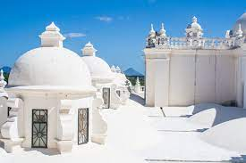
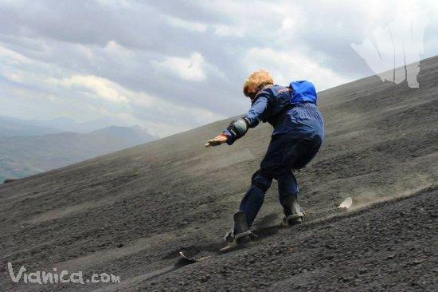
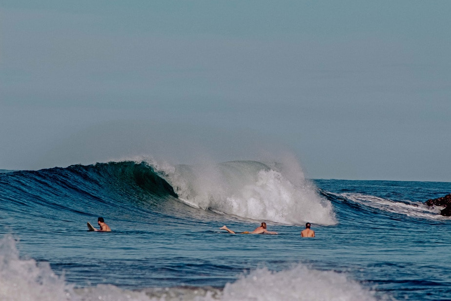

CATEDRAL DE LEÓN
La Insigne y Real Basílica Catedral de la Asunción de la Bienaventurada Virgen María denominada popularmente como la Catedral de León es el monumento más conocido y característico de la ciudad de León. Como máximo exponente de la arquitectura barroca y neoclásica, miles de turistas acuden por la grandeza de su arquitectura.
Ver más
CERRO NEGRO
El Cerro Negro, es el volcán más joven de Centroamérica, nació en abril de 1850 y desde entonces ha sido uno de los volcanes más activos de Nicaragua. En sus faldas se puede practicar volcano boarding, un deporte extremo que consiste en descender, a bordo de una tabla estilo trineo, sobre las cenizas negras de este coloso de 728 metros.
Ver más
PLAYA EL TRANSITO
El cálido océano Pacífico baña El Tránsito, un pequeño pueblo pesquero ubicado en el municipio de Nagarote. Una lengua de arena oscura bordeada por pequeñas formaciones rocosas, habitantes amigables y serviciales, piscinas naturales y buenas olas para el surf, son algunos de los atractivos de esta pintoresca y asombrosa playa.
Ver másHistoria de León
Ubicada a tan solo 93km de la ciudad de Managua capital de Nicaragua, conocida como La ciudad universitaria, encontramos el departamento de León, que en la actualidad cuenta con 10 municipios: Telica, Quezalguaque, La Reynaga, El sauce, Achuapa, Santa Rosa del peñón, El Jicaral, La Paz centro y Nagarote.
La ciudad de León fue fundada el 15 de junio de 1524 día de la santísima Trinidad por Francisco Hernández de Córdoba a orillas del volcán Momotombo.
Esta ubicación dista unos 30 km de la actual ciudad de León y es conocida como León Viejo, cuyas ruinas se han convertido en atractivo turístico. Se optó por el traslado de la ciudad a un nuevo emplazamiento junto al antiguo poblado indígena de Subtiaba a raíz de un terremoto y de la erupción del volcán en 1610. León fue la capital de Nicaragua hasta el año 1824.
Aún conserva en sus calles y edificios el estilo colonial de aquella época, que se evidencia en la bellísima Catedral –considerada la más grande de Centroamérica–, cuyo atrio está decorado con impresionantes leones, que también se encuentran alrededor de la fuente de la plaza central.
Esta iglesia fue construida entre 1747 y 1860, y restaurada en 1992. En su interior hay bellos decorados de estilo barroco, valiosos óleos y frescos, así como una imagen de Cristo, tallada en madera, que fue rescatada de León Viejo. También alberga la tumba del “Príncipe de las Letras Castellanas”, Rubén Darío y los restos mortales de los obispos fundadores de la ciudad y de otros grandes poetas, como Alfonso Cortes.